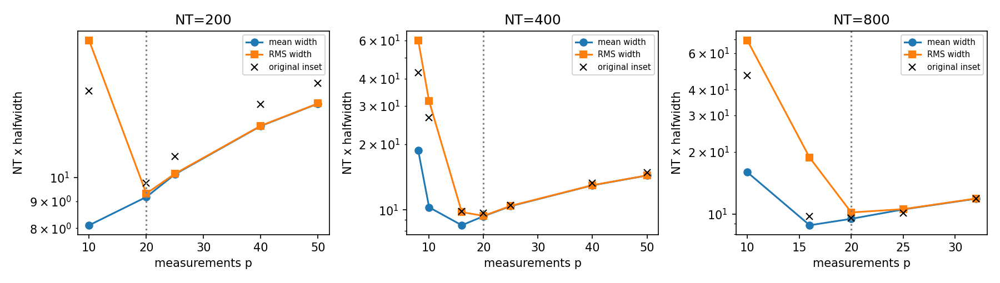
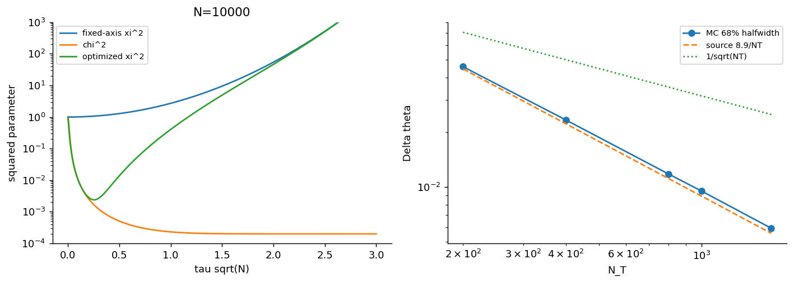
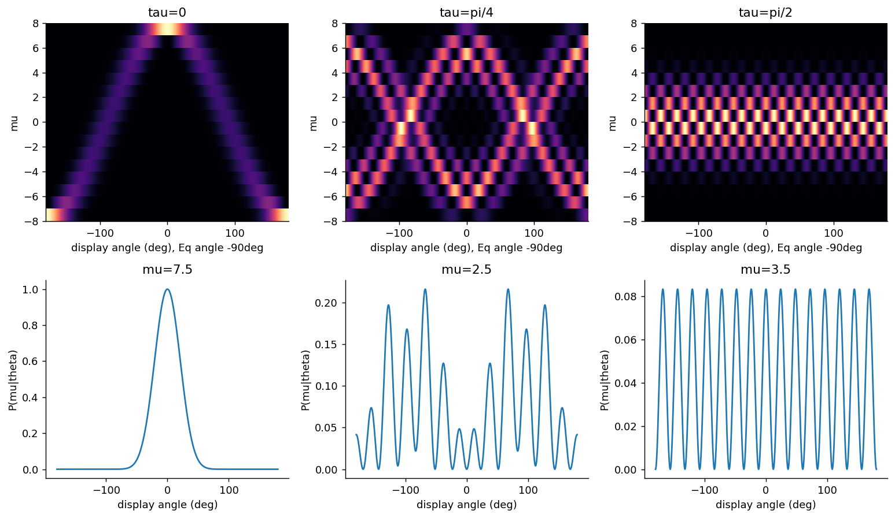

压缩、纠缠增强和 Heisenberg 标度得到支持；有限样本系数尚未完全对齐。
核对版本：0711.4840v3 · 期刊原文
同一批27.2万条原条件测量记录，平均半宽的最优次数为10/16/16，均方根半宽则均为20。具体机制是后者对少量宽后验加更大权重。
仍需核对：尚未确认作者实际使用均方根；整条曲线的数值仍有差异。选定宽尾经高阶积分与网格加密核验，不能把最优点差异归为网格精度。
任务范围：同批记录的RMS区间汇总恢复三组p20，平均区间则给10/16/16；需继续核对完整插图数值与统计口径，不把候选RMS准则说成作者已确认方法。主图原始圆点比较已修正并保留。

必要的源结果与独立计算对照。Comparison reference: Phys. Rev. Lett. 102, 100401 (2009), Entanglement, Nonlinear Dynamics, and the Heisenberg Limit, DOI 10.1103/PhysRevLett.102.100401; fixed source 0711.4840v3. Colored curves/maps are independent calculations; any source marks are limited validation excerpts, excluded from the repository content license. Graphic agreement does not establish author-array equality. Original figures and digitized source point sets are not redistributed.

必要的源结果与独立计算对照。Comparison reference: Phys. Rev. Lett. 102, 100401 (2009), Entanglement, Nonlinear Dynamics, and the Heisenberg Limit, DOI 10.1103/PhysRevLett.102.100401; fixed source 0711.4840v3. Colored curves/maps are independent calculations; any source marks are limited validation excerpts, excluded from the repository content license. Graphic agreement does not establish author-array equality. Original figures and digitized source point sets are not redistributed.

独立计算结果。诊断变体以图例和说明为准，不自动替代论文条件。